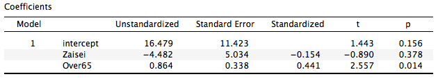

JASP入門: 線形回帰分析
- 今回は線形回帰分析です。使用するデータはこれまでと同様、都道府県ごとの財政力指数、高齢者比、各政党の得票率データです。
- 推定するモデルは以下のモデルです。
\[\text{自民党得票率} = \beta_0+ \beta_1 \cdot \text{65歳以上人口比} + \beta_2 \cdot \text{財政力指数} + \varepsilon\]
- 回帰分析から推定される値は切片 (\(\beta_0\))と傾き (\(\beta_{1, 2}\))、誤差項 (\(\varepsilon\))の標準偏差です。
- 私の講義において誤差項 (\(\varepsilon\))については説明しませんでした。簡単に説明すると、切片・傾きが推定されれば自民党得票率の予測値が計算できます。この予測値を実際の観測値から引いたものを「残差 (residuals)」といい、これは「誤差 (errors)」の推定値となります。この残差の標準偏差が誤差項の標準偏差の推定値となります。
- 回帰分析が最良線形不偏推定量 (Best Linear Unbiased Estimator; BLUE)であるためには、いくつかの条件がありますが、中には「誤差項が正規分布に従うこと」、「誤差項の分散が説明変数と独立していること」、「誤差項間の相関 (自己相関)がないこと」など、誤差項に関するものが多いです。したがって、実際のデータ分析では残差のグラフなどを見て回帰分析の診断 (diagnostic)を行います。
- 分析メニューの「Regression」から「Linear Regression」を選択します。
- 応答変数と説明変数を指定します。自民党得票率 (
LDP)変数を選択し、「Dependent」へ投入します。「Dependent variable」は従属変数とも呼ばれ、私の授業では「応答変数」と説明しました。 - 続いて財政力指数 (
Zaisei)と65歳以上人口比 (Over65)を「Covariates」へ投入します。「Covariates」は「共変量」と訳されますが、この授業では「説明変数」と説明しました。

- 実はこれだけでも線形回帰分析は出来ますが、可能なら記述統計も一緒に見る習慣を付けましょう。下にある「Statistics」をクリックします。
- 「Descriptive」にチェックを入れます。これで記述統計が表示されます。
- 右側の結果画面に表が4つ出てきますが、ここでは「Model Summary」と「Coefficients」の表のみを紹介します。まず、「Model Summary」で見るところは「Adjusted \(R^2\)」です。これが調整済み決定係数です。この値が高いほど良いモデルと言われています。

- つづいて、「Coefficients」の表です。まず、第2列目には変数名が書いてあります。「Intercept」は切片を意味します。
- 「Unstandardized」列が係数です。つまり、最初にお見せしたモデルだと以下のような数式に表現できます。
\[自民得票率の予測値 = 16.479 + 0.864 \times 65歳以上人口比 – 4.482 \times 財政力指数 \]
- 「Standard Error」は標準誤差です。レポートや論文などに掲載する際には係数と一緒に出す場合が多いです。
- 「Standardized」は標準化係数です。係数同士の大きさを比較する際に用いられます。
- 「t」は係数を標準誤差で割った値です。
- 「p」は有意確率 (p値)です。この結果だと「65歳以上人口比」の係数が95%水準で有意ですね。
- 65歳以上人口比が1%ポイント上がると、自民党の得票率は0.864%ポイント上がりますね。高齢者が0%で、財政力指数が0の都道府県なら自民得票率の予測値は16.479%になります。
- 財政力指数や高齢者比は「中心化」あるいは「標準化」した方が良いですが、現在、JASP内でデータの修正はできません。中心化や単位変換などをする場合は他の表計算ソフトや統計ソフトでデータを修正することになります。